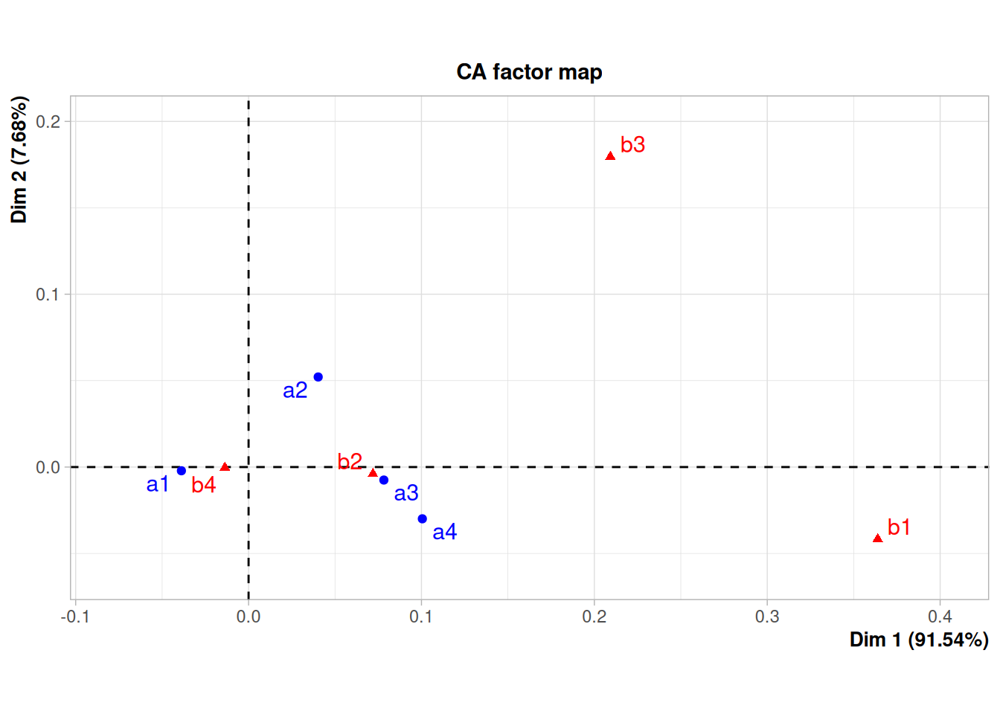

Análisis de Correspondencia
Modelos Estadísticos para la toma de decisiones
El Análisis de Correspondencia es un método estadístico utilizado para representar posibles asociaciones entre variables categóricas, es decir la asociación entre sus categorías, con el fin establecer si existe, patrones o estructuras en los datos
Este método estadístico es de tipo exploratorio y complementario de otros tipos de análisis como los modelos de regresión logístico.
La creación de esta herramienta estadística se le atribuye al matemático y estadístico francés Jean-Paul Benzécri al final de la década de los noventa. A lo largo del tiempo este método se ha empleado por varios campos del conocimiento con diversos nombres como : Escalonamiento óptimo, Análisis canónico, Método de los promedios recíprocos, Puntuaciones aditivas, Puntuaciones apropiadas, Ponderaciones de Guttman, Teoría de cuantificación de Hayashi, Regresión lineal simultánea, Análisis factorial de correspondencia, Biplot, Escalado dual.
Iniciaremos la explicación del método asociándolo con el caso de dos variables A y B y un test de independencia para tablas de contingencia chi-cuadrado, la cual consiste en obtener el estadístico de prueba mediante la sumatoria de la razón de las diferencias al cuadrado de los valores esperados y los valores observados y los valores observados, llamada también distancia de Pearson :
\[\lambda = \sum_{i=1}^{m} \sum_{j=1}^{n} \dfrac{(n_{ij} - n_{i.} n_{.j}/n)^2}{n_{i.}n_{.j}/n}\]
Donde
| \(\bf{B}\) | \(\bf{1}\) | \(\bf{2}\) | \(\bf{3}\) | \(\ldots\) | \(\bf{j}\) | \(\ldots\) | \(\bf{b}\) | ||
|---|---|---|---|---|---|---|---|---|---|
| \(\bf{A}\) | |||||||||
| \(\bf{1}\) | \(n_{11}\) | \(n_{12}\) | \(n_{13}\) | \(\ldots\) | \(n_{1j}\) | \(\ldots\) | \(n_{1b}\) | \(\bf{n_{1.}}\) | |
| \(\bf{2}\) | \(n_{21}\) | \(n_{22}\) | \(n_{23}\) | \(\ldots\) | \(n_{2j}\) | \(\ldots\) | \(n_{2b}\) | \(\bf{n_{2.}}\) | |
| \(\bf{3}\) | \(n_{31}\) | \(n_{32}\) | \(n_{33}\) | \(\ldots\) | \(n_{3j}\) | \(\ldots\) | \(n_{3b}\) | \(\bf{n_{3.}}\) | |
| \(\vdots\) | \(\vdots\) | \(\vdots\) | \(\vdots\) | \(\vdots\) | \(\vdots\) | \(\vdots\) | \(\vdots\) | ||
| \(\bf{i}\) | \(n_{i1}\) | \(n_{i2}\) | \(n_{i3}\) | \(\ldots\) | \(n_{ij}\) | \(\ldots\) | \(n_{ib}\) | \(\bf{n_{i.}}\) | |
| \(\vdots\) | \(\vdots\) | \(\vdots\) | \(\vdots\) | \(\vdots\) | \(\vdots\) | \(\vdots\) | \(\vdots\) | ||
| \(\bf{a}\) | \(n_{a1}\) | \(n_{a2}\) | \(n_{a3}\) | \(\ldots\) | \(n_{aj}\) | \(\ldots\) | \(n_{ab}\) | \(\bf{n_{a.}}\) | |
| \(\bf{n_{.1}}\) | \(\bf{n_{.2}}\) | \(\bf{n_{.3}}\) | \(\ldots\) | \(\bf{n_{.j}}\) | \(\ldots\) | \(\bf{n_{.b}}\) | \(\bf{n}\) |
Supongamos que tenemos la siguiente tabla de contingencia, como resultado de una encuesta que contenía dos preguntas: su actividad laboral y si habían sufrido o no de alguna enfermedad relacionadas con el estrés.
x= c(4,1,3,4,1,4,9,6,20,25)
m=matrix(x, nrow = 5)
rownames(m) = c("Empleado bancario", "Empleado estatal", "Docente", "Ama de casa", "Empleado público")
colnames(m) = c("Si", "No")
m Si No
Empleado bancario 4 4
Empleado estatal 1 9
Docente 3 6
Ama de casa 4 20
Empleado público 1 25Con esta información podremos obtener una métrica que nos permita agrupar las profesiones conformando grupos semejantes
Empleado bancario Empleado privado Docente Ama de casa Empleado público
0.800000 0 0.4285714 0.2000000 0.6000000 0.4444444
x <- c(4, 1, 3, 4, 1, 4, 9, 6, 20, 25)
m <- matrix(x, nrow = 5, byrow = TRUE,
dimnames = list(c("Empleado bancario", "Empleado privado", "Docente", "Ama de casa", "Empleado público"), c("Si", "No")))
df <- as.data.frame(m)
indicador <- df$Si / rowSums(df)
indicadorEmpleado bancario Empleado privado Docente Ama de casa
0.8000000 0.4285714 0.2000000 0.6000000
Empleado público
0.4444444 
La representación gráfica de estos valores permite visualizar que podrían existir tres grupos en cuanto a enfermedades relacionadas con el estrés :
- Grupo 1 : Empleado público, empleado estatal y ama de casa
- Grupo 2 : Docente
- Grupo 3 : Empleado bancario
Análisis de correspondencia simple
Ahora utilicemos la métrica \(\lambda\) de Pearson para identificar si existe asociación entre las variables \(A\) y \(B\). Para ello se parte de una tabla cruzada o de doble entrada donde se visializan las frecuencias conjuntas para todas las combinaciones posibles entre las categorías de ambas variables.
b1 b2 b3 b4 a1 50 315 24 4012 a2 9 40 6 459 a3 41 147 14 1539 a4 4 11 1 124
library(tidyr)
m <- c(50,9,41,4,315,40,147,11,24,6,14,1,4012,459,1539,124) %>%
matrix(., ncol=4)
colnames(m) <- c( "b1", "b2", "b3", "b4")
rownames(m) <- c( "a1", "a2", "a3", "a4")
mMediante la prueba chi.cuadrado se obtienen dos matrices con las que posteriormente se construirán las coordenadas que serán representadas en un plano cartesiano para permitir ver la cercania o no entre las categorias de ambas variables
Pearson's Chi-squared test
data: m
X-squared = 21.359, df = 9, p-value = 0.01115
chisq.test(m)Los resultados de la prueba indican que las variables A y B no son independientes y que por tanto existen relaciones entre sus categorías.
Iniciaremos visualizando la matriz de valores observados
Matriz de valores observados b1 b2 b3 b4 a1 50 315 24 4012 a2 9 40 6 459 a3 41 147 14 1539 a4 4 11 1 124
chisq.test(m)$observedY la matriz de valores esperados. Estos valores corresponde a los valores esperados en caso de que se cumpla la hipótesis nula que afirma que las dos variables son independientes haciendo que se cumpla que :
\[n_{11} = \dfrac{n_{.1} \times n_{1.} }{n} = \dfrac{4401 \times 104}{6796} = 67.34903\]
Matriz de valores esperados
b1 b2 b3 b4
a1 67.349029 332.21204 29.1414067 3972.2975
a2 7.865803 38.79959 3.4034726 463.9311
a3 26.642731 131.42039 11.5281048 1571.4088
a4 2.142437 10.56798 0.9270159 126.3626
chisq.test(m)$expectedA partir de los valores observados y los valores esperados se calcula la matriz de discrepancias
\[ d_{11} = \dfrac{(50-67.349029)^2}{67.349029} = 4.469089\]
Matriz de discrepancias
b1 b2 b3 b4
a1 4.4690890 0.89176239 0.90709633 0.39681979
a2 0.1635436 0.03713929 1.98090454 0.05241317
a3 7.7368635 1.84692881 0.53003214 0.66839920
a4 1.6105686 0.01766092 0.00574605 0.04417225
Obs <- chisq.test(m)$observed
Esp <- chisq.test(m)$expected
Discrepancias <- (Obs-Esp)^2/Esp
DiscrepanciasLa suma total de los valores de la matriz de discrepancias constituye el valor del esta disco chi-cuadrado (\(\lambda = 21.359\))
Suma total de discrepancias [1] 21.35914
sum(Discrepancias)Ahora fijaremos como propósito determinar las coordenadas para cada una de las clases de las dos variables (a1,a2,a3,a4,b1,b2,b3 y b4) a partir de la matriz de discrepancias que llamaremos C. Para ello se debe realizar la factorización de la matriz C como .
\[C = U \hspace{.2cm} D \hspace{.2cm} V^{t}\]
Factorización de la matriz U
[,1] [,2] [,3] [,4]
[1,] -0.49483693 0.20950101 0.24857755 0.8058877
[2,] -0.04024879 0.96276950 -0.03063301 -0.2655495
[3,] -0.85185428 -0.15185194 -0.32185800 -0.3843081
[4,] -0.16691535 -0.07826375 0.91305983 -0.3637799
C <- Discrepancias
U <- eigen(C%*%t(C))$vectors
U
Matriz V obtenida en la factorizacion de la matriz de discremancias
[,1] [,2] [,3] [,4]
[1,] 0.96744006 0.10215951 0.229362467 -0.03187520
[2,] 0.21517830 0.02922188 -0.951134440 -0.21951688
[3,] 0.10455668 -0.99423843 -0.001451151 -0.02357428
[4,] 0.08261924 -0.01412327 -0.206722109 0.97480283
V <- eigen(t(C) %*% C)$vectors
V[1] 9.38307393 2.02794007 0.37617070 0.03378498
a <- sqrt(eigen(C%*%t(C))$values)
a
[,1] [,2] [,3] [,4]
[1,] 9.383074 0.00000 0.0000000 0.00000000
[2,] 0.000000 2.02794 0.0000000 0.00000000
[3,] 0.000000 0.00000 0.3761707 0.00000000
[4,] 0.000000 0.00000 0.0000000 0.03378498
D <- diag(a)
D
Comparación de resultados
[,1] [,2] [,3] [,4]
[1,] 4.4279304 1.08159250 0.908651422 0.38239826
[2,] 0.1682577 0.01128016 1.980448096 0.06514001
[3,] 7.7915752 1.61091402 0.529068579 0.64365541
[4,] 1.4522285 0.66563043 0.006163424 0.21013766
b1 b2 b3 b4
a1 4.4690890 0.89176239 0.90709633 0.39681979
a2 0.1635436 0.03713929 1.98090454 0.05241317
a3 7.7368635 1.84692881 0.53003214 0.66839920
a4 1.6105686 0.01766092 0.00574605 0.04417225
-U%*%D%*%t(V)
CDescomposición de la matriz de discrepancia
udvt=svd(Discrepancias)
U <-udvt$u
D <-udvt$d
V <-udvt$v
U
[,1] [,2] [,3] [,4]
[1,] -0.49483693 0.20950101 0.24857755 0.8058877
[2,] -0.04024879 0.96276950 -0.03063301 -0.2655495
[3,] -0.85185428 -0.15185194 -0.32185800 -0.3843081
[4,] -0.16691535 -0.07826375 0.91305983 -0.3637799
U
D
[,1] [,2] [,3] [,4]
[1,] 9.383074 0.00000 0.0000000 0.00000000
[2,] 0.000000 2.02794 0.0000000 0.00000000
[3,] 0.000000 0.00000 0.3761707 0.00000000
[4,] 0.000000 0.00000 0.0000000 0.03378498
D
V
[,1] [,2] [,3] [,4]
[1,] -0.96744006 0.10215951 0.229362467 0.03187520
[2,] -0.21517830 0.02922188 -0.951134440 0.21951688
[3,] -0.10455668 -0.99423843 -0.001451151 0.02357428
[4,] -0.08261924 -0.01412327 -0.206722109 -0.97480283
V
Vector de cooordenadas filas
[,1]
[1,] -1.8097845
[2,] -1.4643068
[3,] -2.5199033
[4,] 0.2270303
coord_filas <- U %*% sqrt(D)
coord_filas
Matriz de coordenadas columas
[,1]
[1,] -3.3491832
[2,] -0.2578431
[3,] -0.6907786
[4,] 0.2455275
coord_columnas <- t(V) %*% sqrt(D)
coord_columnasFinalmente se representa los resultados obtenidos en un plano cartesiano donde se pueden visualizar las relaciones entre las categorías de las dos variables
Porcentaje de varianza explicado
Con el fin de establecer el porcentaje explicado por los dos primeros ejes, llamados componentes o tambien dimensiones a tener en cuenta dentro del análisis se calculan los valores propios de la matriz obtenida en el análisis de correspondencia
library(ade4)
library(FactoMineR)
library(factoextra)
library(gridExtra)
library(tidyr)
m <- c(50,9,41,4,315,40,147,11,24,6,14,1,4012,459,1539,124) %>%
matrix(., ncol=4)
colnames(m) <- c( "b1", "b2", "b3", "b4")
rownames(m) <- c( "a1", "a2", "a3", "a4")
m b1 b2 b3 b4
a1 50 315 24 4012
a2 9 40 6 459
a3 41 147 14 1539
a4 4 11 1 124res.ac <- CA(m)
valores_prop <-res.ac$eig El mapa permite visualizar la cercania o no entre las categorías de las variables. Se observa varios grupos:
- a1, b4
- a3,a4, b2
- a2
- b1
- b3
Este tipo de cercanias permite asociar las categorías